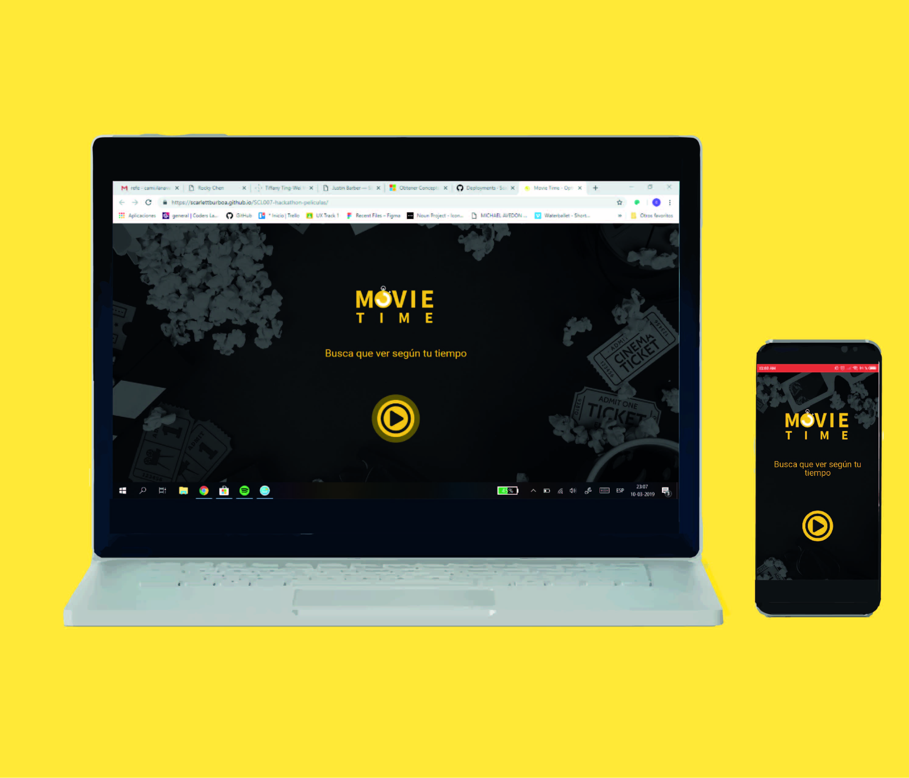
Para este proyecto se trabajó con la Fundación Katy Summer. Esta fundación nace como un proyecto de continuidad de vida, para promover los valores de lealtad, solidaridad, compasión, amor al prójimo, motivación, generosidad y fe en que todo sueño se puede alcanzar.
Como grupo ux se nos entregó el desafío de crear una web o aplicación que trate el complicado tema del ciberbullying.
¿De qué manera podemos ser un aporte en este problema?
Como primer paso se planificó como íbamos a funcionar a lo largo de las dos semanas. Todo esto se hizo de manera física con el uso de un tablero con post-its para organizarnos por día, con la posibilidad de ir cambiando tareas a lo largo de las dos semanas.
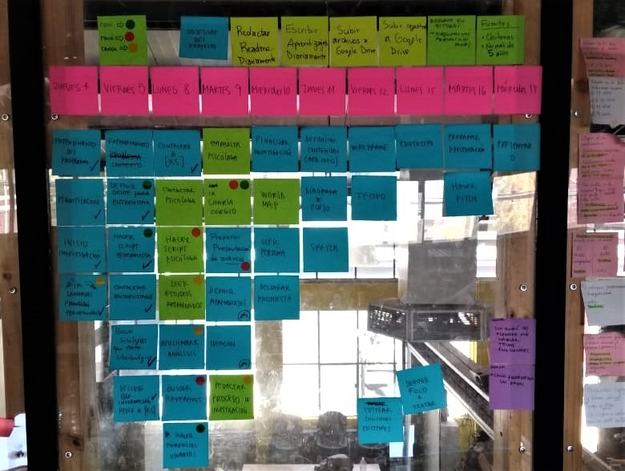
Comenzamos buscando todo tipo de información referente a bullying y ciberbullying, preferentemente datos que tuvieran respaldo profesional. La imagen que dió pie a nuestra idea fue la mostrada en la presentación de Leli y Emmanuel sobre los dos cerebros, uno es el cerebro encendido y pensante y el segundo es el cerebro apagado, esto nos habla de que un cerebro depresivo tiende a ser un cerebro apagado y más propenso a pensar y llevar a cabo suicidio.
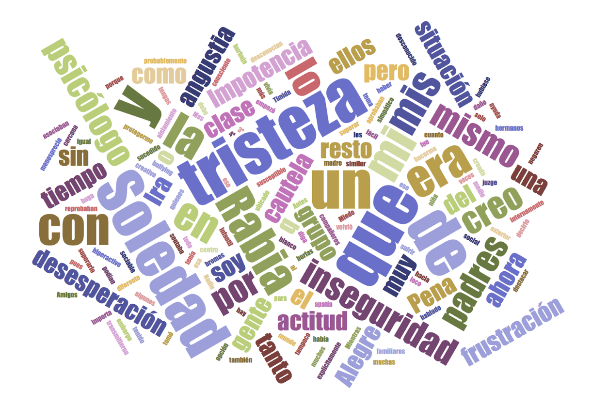
Gracias a la información recopilada se obtuvieron dos perfiles de usuarios, una madre que quiere prevenir y que quiere que alguien la guíe, y otro que sospecha que ocurre algo pero no sabe realmente cómo entablar una conversación.
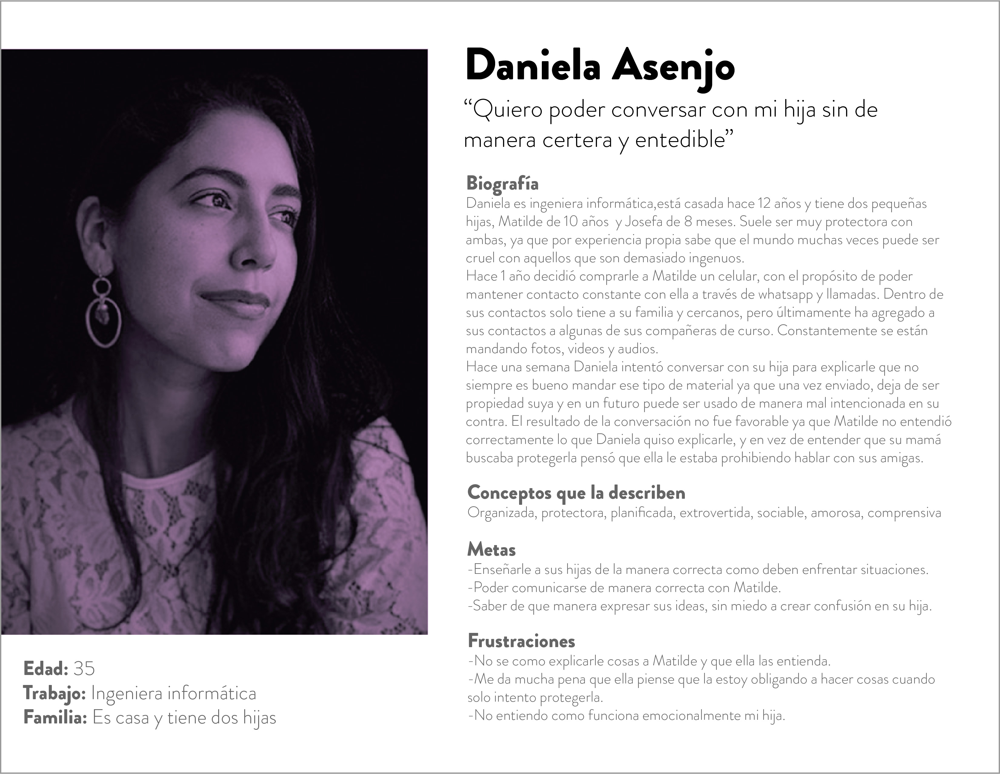
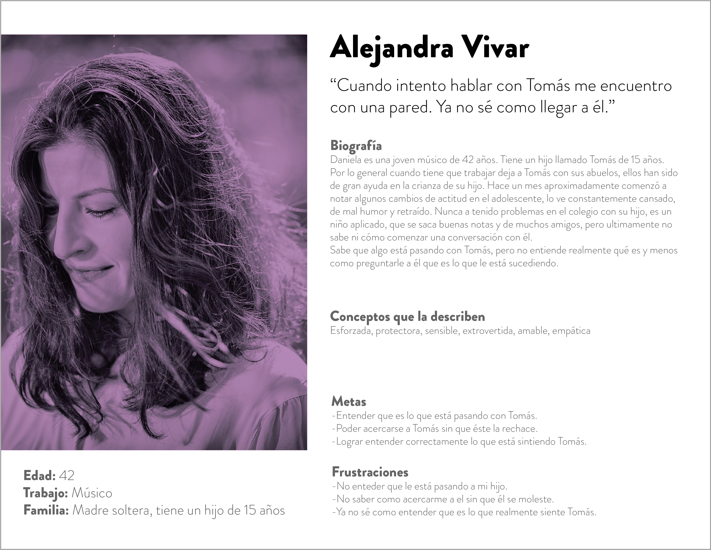
Una vez finalizada la etapa de investigación, agrupamos todos nuestro aprendizajes.
Pudimos detectar que existe un gran problema de comunicación por parte de los padres e hijos, las herramientas que existen actualmente no están solucionando este problema que podría evitar llegar a una tragedia.
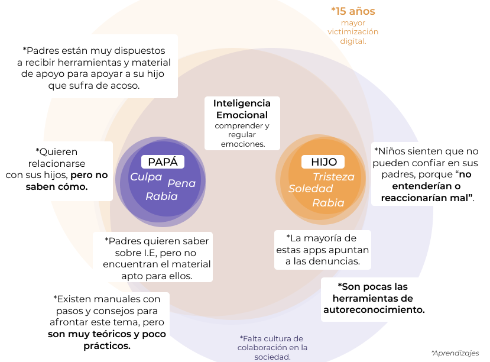
Procedimos a dibujar nuestras primeras ideas
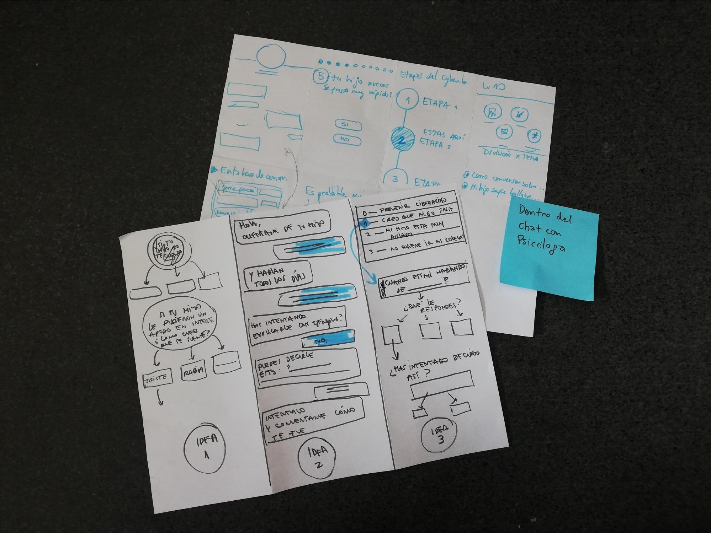
La aplicación se dividió en dos etapas:
IDENTIFICAR si el niño sufre de bullying.
IMPLEMENTAR herramientas para que el padre pueda apoyarlo.
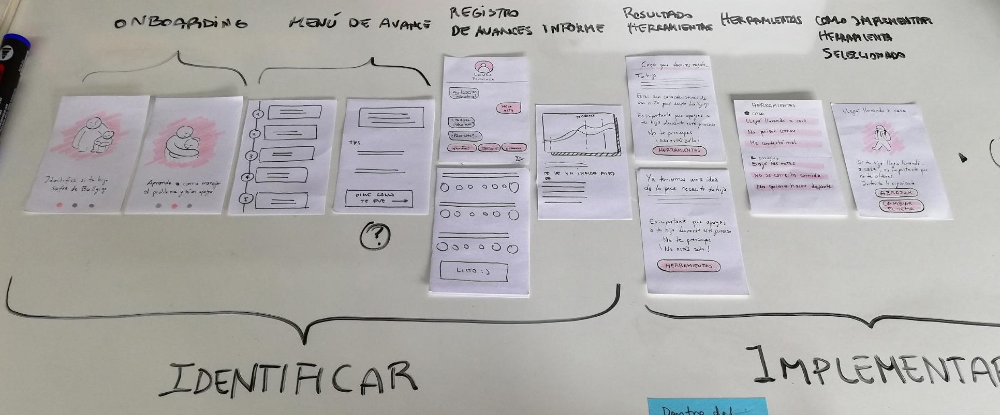
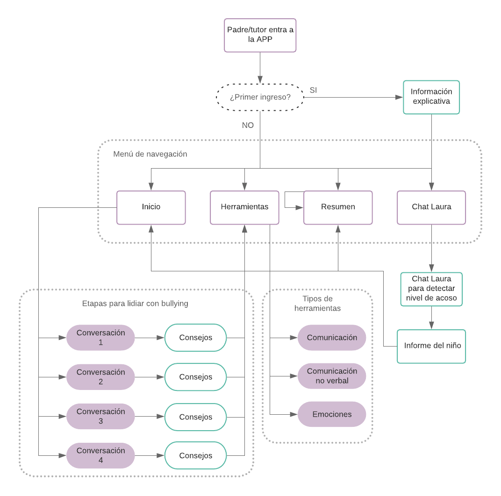
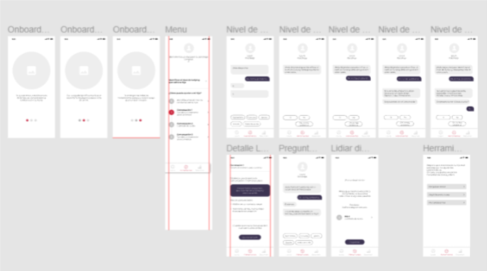
Se pudo confirmar que la IA bajo la especialización de una psicóloga si entrega confianza al usuario, el lenguaje usado fue entendido bastante bien, se realizaran pequeñas modificaciones en el prototipo al igual que con el informe.
Una vez testeado, se procedió al diseño del prototipo de Alta fidelidad.
Acá puedes testear el Prototipo Interactivo.
Para comenzar el diseño, definimos la siguiente Guía de estilos.
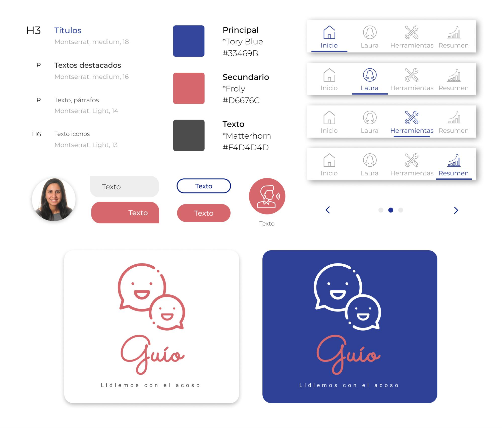
El desarrollo de este proyecto fue un gran desafío, ya que el tema es muy delicado, muy técnico a nivel de información y excesivamente denso. Falta mucho por hacer a nivel macro. En esta primera etapa se abordó el proyecto desde el punto de vista de los padres, pero en un futuro nos gustaría poder tratar y ayudar también a las víctimas, ampliar nuestras herramientas de ayuda y nuestra base de datos. Como uno de los próximos pasos se busca perfeccionar aún más la conversación entre nuestra psicóloga y el usuario, lograr un lenguaje más fácil de entender y mucho más cercano y amistoso. Así mismo queremos definir más detalladamente las herramientas y consejos entregados a los padres. Esto sería trabajado en conjunto con un profesional del área. Finalmente queremos mejorar la identidad de la aplicación, testear la recepción del logotipo y el isotipo.